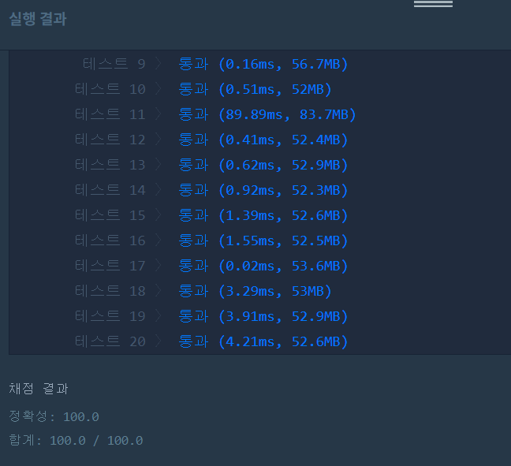

👀 문제
https://programmers.co.kr/learn/courses/30/lessons/17680
👊 도전
1. 설계
- LinkedList를 이용하여 LRU를 구현한다.
- 앞 쪽에는 방금 참조된 것, 뒤로 갈수록 참조된 시간이 예전이다.
- list에 city가 있으면 제거하고 맨 앞으로 이동, 없다면 캐시크기 체크하고 뒤에 넣는다.
2. 구현
1
2
3
4
5
6
7
8
9
10
11
12
13
14
15
16
17
18
19
20
21
22
23
24
25
26
27
28
29
import java.util.*;
/**
*
* @author HEESOO
*
*/
class Solution {
public int solution(int cacheSize, String[] cities) {
// 캐시크기가 0이면 다 miss
if(cacheSize==0) return cities.length*5;
int answer = 0;
LinkedList<String> list=new LinkedList<>();
for(String city:cities){
city=city.toLowerCase();
if(list.remove(city)){ // list에 존재 (hit)
list.addFirst(city); // 방금 참조되었으므로 맨 앞으로
answer+=1;
}
else{ // list에 없음 (miss)
// 캐시가 꽉 찼으면 맨 뒤를 삭제
if(list.size()==cacheSize) list.pollLast();
list.addFirst(city);
answer+=5;
}
}
return answer;
}
}
3. 결과

🤟 성공 🤟
HashMap과 배열을 써야하나 했는데 간단한 방법이 있었다
4. 설명
- LinkedList로 LRU를 구현한다
- LRU는 가장 예전에 참조된 것을 삭제하는 것이다.
- list의 앞으로 갈수록 최근에 참조된 것, 뒤로 갈수록 예전에 참조된 것으로 한다.
- list.remove(city)로 city가 리스트에 있는지 확인한다. 있다면 삭제한 후 true를 리턴받는다.
- true는 list에 있어서 삭제했다는 뜻이므로 방금 참조했으므로 addFirst(city)로 맨 앞으로 옮긴다. 또한 hit이므로 answer+=1.
- false는 캐시에 없으므로 miss라는 뜻이다. 캐시가 꽉 찼는지 list.size()==cacheSize로 확인한다.
- 꽉 찼다면 맨 뒤에가 참조가 예전에 된 것이므로 pollLast()로 지운다. 참고로 그냥 poll(), pop()은 맨 앞을 지우는 메소드이다.
- city를 방금 참조했으므로 맨 앞에 삽입한다.
- miss니까 answer+=5